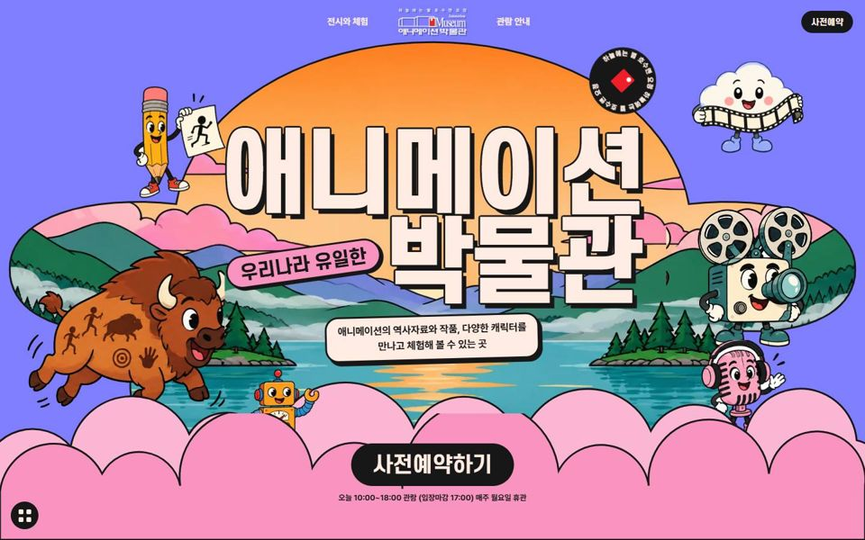
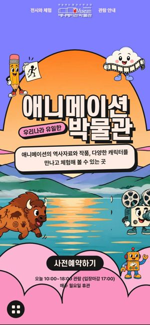
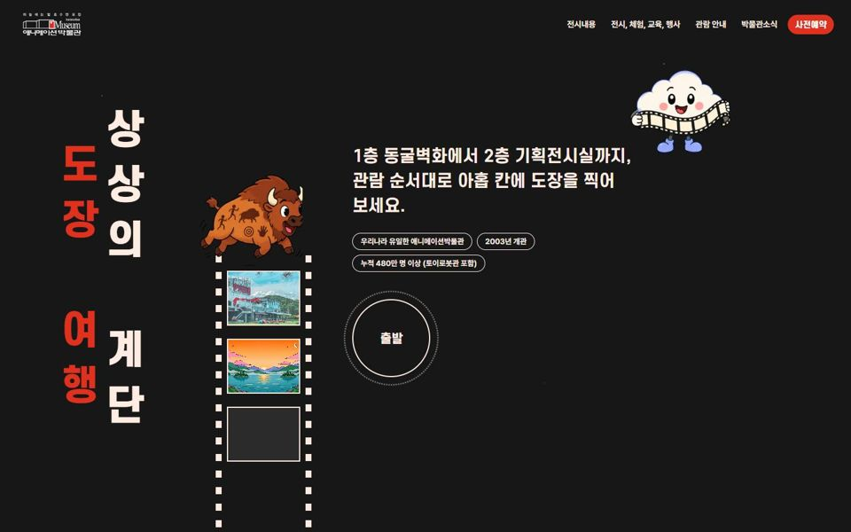
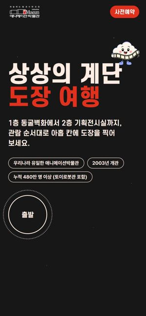

춘천 애니메이션박물관
메인페이지 시안 2개
고르신 Ponpon Mania의 만화 그림체를 두 시안 모두의 바탕으로 두고, 레퍼런스 보드에서 한 곳씩 더 골라 섞었습니다. 사진은 모두 애니메이션박물관 누리집의 실제 사진이고, 전시, 소식, 운영시간, 메뉴 주소도 지금 누리집 그대로입니다.
-


시안 1그림 속으로 들어가는 박물관
Ponpon Mania × Mouse Parallax Wonderland
- Ponpon Mania에서: 보라 바탕, 테두리 있는 구름 모양 창, 창 밖으로 튀어나온 캐릭터, 분홍 구름, 가운데 검정 예약 버튼, 돌아가는 동그란 스티커, 앨범 표지처럼 넘기는 전시 공간과 재생 버튼 모양 넘기기
- Wonderland에서: 화면 가운데 아주 큰 제목과 그 앞뒤로 떠 있는 캐릭터(마우스와 스크롤에 따라 깊이가 다르게 움직임), 아래로 내리면 파스텔 하늘로 떨어지는 장면
- 박물관 재료: 1층 동굴벽화의 첫 질문, 아홉 개 전시 공간, 지금 전시 3건과 소식, 관람 안내
-


시안 2상상의 계단 도장 여행
Ponpon Mania × Collecting Stamps on Mt. Fuji
- Mt. Fuji에서: 세로 제목과 출발 버튼으로 여는 첫 화면, 화면에 계속 서 있는 세로 축(지팡이 대신 필름 띠), 공간을 지날 때마다 축에 쌓이는 도장, 왼쪽 경로 표시와 오른쪽 큰 번호와 설명
- Ponpon Mania에서: 굵은 테두리 만화 그림체와 캐릭터, 공간마다 바뀌는 밝은 색 바탕, 아래 검정 재생 버튼 모양 넘기기
- 박물관 재료: 관람 순서대로 아홉 공간(동굴벽화에서 기획전시실까지), 끝에서 완성되는 도장판, 관람 안내, 전시와 소식
캐릭터 6종(들소, 영사기, 연필, 마이크, 장난감 로봇, 구름)과 호수 그림은 이 시안을 위해 새로 만든 그림입니다. 레퍼런스 30곳은 레퍼런스 보드에서 볼 수 있습니다. 검토용 자료, 어니스트패밀리